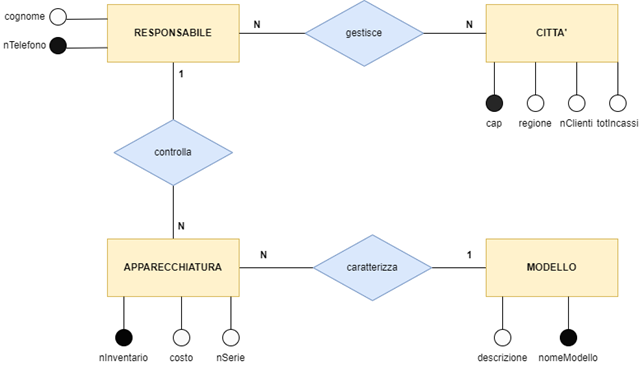
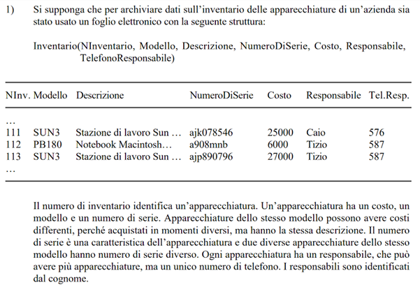

Un'azienda possiede diversi responsabili, ogni responsabile può gestire più città e
in ogni città ci possono essere più responsabili. Per ogni città si vuole registrare il suo
CAP, la regione in cui si trova (es: "Lombardia", Puglia", etc...), il numero dei clienti
presenti e il totale degli incassi arrotondato all'intero più vicino. L'azienda inoltre possiede
già un database in formato foglio elettronico che vuole trasformare in database relazionale
aggiungendo le informazioni sulle città descritte in precedenza. Utilizzando
un DBMS realizza il database relazionale tenendo in considerazione le informazioni riportate
nei testi e il modello concettuale fornito.


CONSEGNA UN FILE DI TESTO CONTENENTE LO SCHEMA LOGICO E UN FILE .db CONTENENTE IL DATABASE FISICO.
Soluzione esercizio: soluzione.